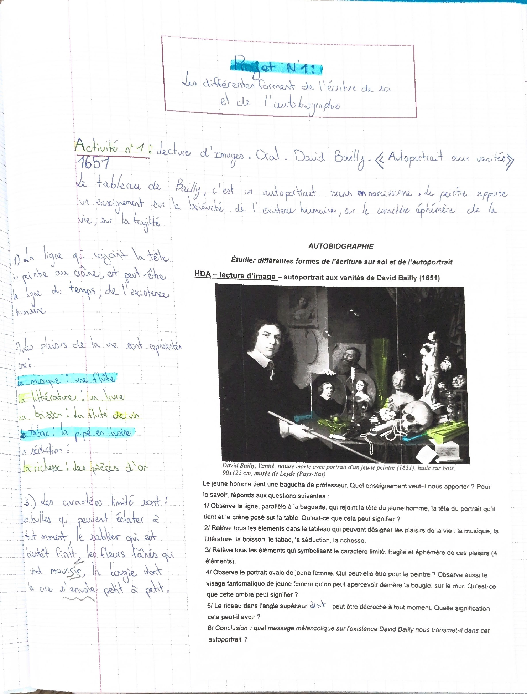
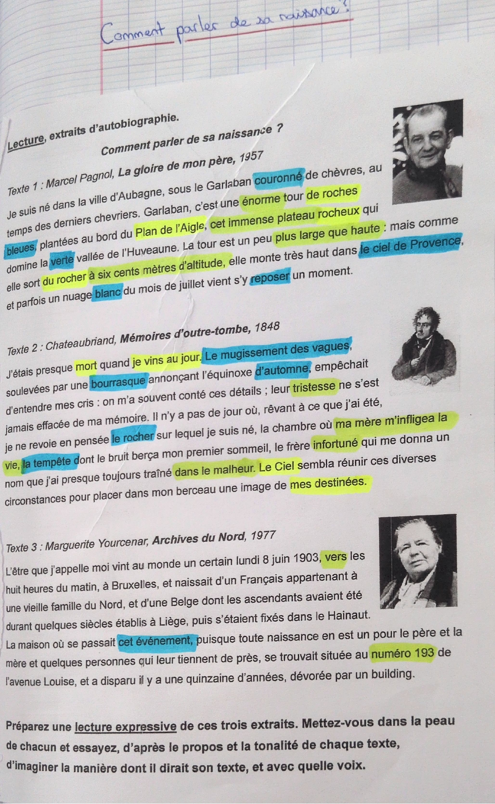
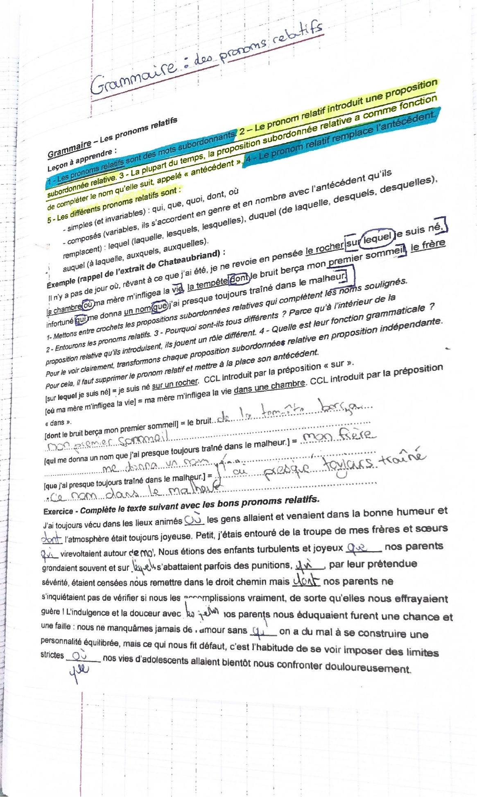
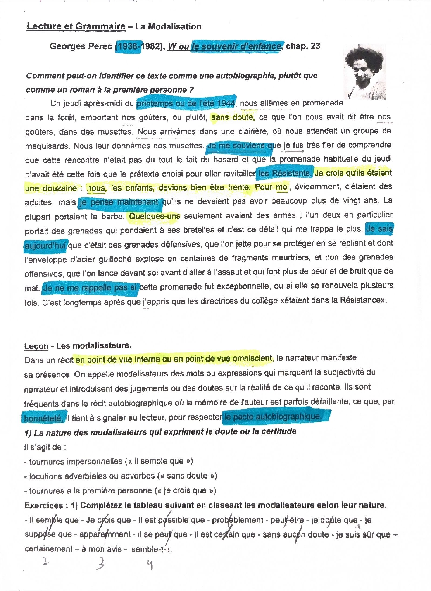
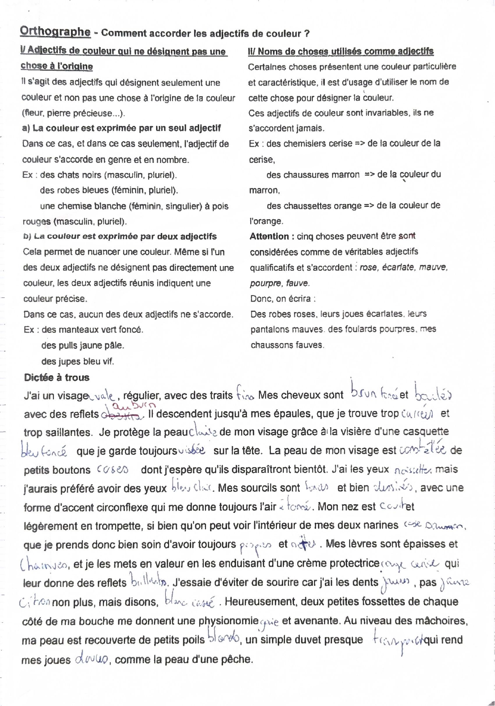

Projet n° 1 : les différentes formes de l’écriture de soi et de l’autobiographie. Autoportrait aux vanités de Bailly,
récits de naissance (Pagnol, Chateaubriand, Yourcenar), Frida Kahlo, Perec, Rousseau, George Sand, Nathalie Sarraute.
Grammaire : pronoms relatifs, sujet du verbe, modalisateurs, pronom « il », pronoms. Vocabulaire : racines latines et grecques, mémoire, couleurs.
La lecture complète reprend le cahier. La synthèse garde l’essentiel. L’extra va plus loin.
Les activités, dans l’ordre du cahier
Le cahier ne porte pas de dates : les activités sont numérotées par le professeur.
Vocabulaire et étymologie (omni-, chrono-, thermo-, phon-…), programme de l’année, évaluation d’étymologie.
Histoire des arts, oral : David Bailly, Autoportrait aux vanités (1651).
Comment parler de sa naissance ? Pagnol, Chateaubriand, Yourcenar. Grammaire : les pronoms relatifs. Travail sur Frida Kahlo.
Expression écrite : « Le jour de ma naissance », en exploitant ses lectures.
Histoire des arts, oral : Autoportrait à la frontière entre le Mexique et les États-Unis de Frida Kahlo.
Grammaire : identifier le sujet et sa nature.
Vocabulaire : les racines latines et grecques des mots français.
Lecture et grammaire : les modalisateurs (Perec, W ou le souvenir d’enfance), le pronom « il ». Écrit : mon premier voyage.
Le pacte autobiographique : préambule des Confessions de Rousseau.
Accorder les adjectifs de couleur, dictée à trous (un portrait).
Lexique de la mémoire, souvenirs douloureux.
Pourquoi écrire sur soi ? George Sand. Les pronoms dans un texte autobiographique (Nathalie Sarraute, Enfance).
Les œuvres de la séquence, dans l’ordre chronologique
David Bailly, Autoportrait aux vanités (peinture). Message : la vie est brève, les plaisirs sont vains, la mort est certaine (memento mori).
Jean-Jacques Rousseau, Les Confessions : le préambule fonde le pacte autobiographique (tout dire, avec franchise).
Chateaubriand, Mémoires d’outre-tombe : une naissance dans la tempête, vision pessimiste.
George Sand, Histoire de ma vie : écrire sur soi est un devoir, pour aider les autres.
Frida Kahlo, Autoportrait à la frontière entre le Mexique et les États-Unis : une double appartenance.
Marcel Pagnol, La Gloire de mon père : une naissance sous le ciel de Provence, vision optimiste.
Marguerite Yourcenar, Souvenirs pieux (la fiche indique Archives du Nord, 1977) : la naissance d’un « être que j’appelle moi », racontée à partir de documents.
Georges Perec, W ou le souvenir d’enfance : une mémoire incertaine, pleine de modalisateurs.
Nathalie Sarraute, Enfance : l’autrice dialogue avec son double, qui la tutoie.
À retenir : l’écriture de soi
Une autobiographie est le récit de sa propre vie. Elle commence souvent par la naissance : c’est l’incipit (le début du texte).
Raconter sa naissance est paradoxal : on ne peut pas s’en souvenir. L’auteur s’appuie sur des récits familiaux (« on m’a souvent conté ces détails », Chateaubriand) ou des recherches documentaires (Yourcenar).
Le lieu et les circonstances de la naissance semblent déterminer la personnalité : optimisme de Pagnol, pessimisme de Chateaubriand (« prédestiné au malheur »), héritage familial chez Yourcenar.
Le pacte autobiographique : l’auteur promet au lecteur de dire la vérité. Rousseau : « J’ai dit le bien et le mal avec la même franchise. »
Pourquoi écrire sur soi ? Pour soi-même : un exutoire, se libérer de ses souffrances en les écrivant. Pour les autres : les aider à se connaître, à traverser leurs difficultés, en s’offrant en exemple de résilience. Le narcissisme (se trouver intéressant) n’est pas une bonne raison.
Une vanité est un tableau qui rappelle que la vie est brève et que les plaisirs terrestres sont vains : crâne, bougie, sablier, fleurs fanées, bulles de savon. Son message est memento mori (« souviens-toi que tu vas mourir »), et non « profite de la vie ».
À retenir : la grammaire
Pronoms relatifs : ils introduisent une proposition subordonnée relative, qui complète le nom qu’elle suit, l’antécédent. Le pronom relatif remplace l’antécédent. Simples (invariables) : qui, que, quoi, dont, où. Composés (variables) : lequel, laquelle, lesquels, lesquelles, duquel, auquel…
Sujet : on le trouve avec « qu’est-ce qui + verbe ? » ou « qui est-ce qui + verbe ? ». Sa nature : un groupe nominal, un infinitif, un pronom (personnel, relatif, indéfini…) ou une proposition subordonnée.
Modalisateurs : mots qui marquent la certitude ou le doute du narrateur. Tournures impersonnelles (il semble que), adverbes ou locutions adverbiales (sans doute, peut-être), tournures à la première personne (je crois que). Fréquents en autobiographie, par honnêteté quand la mémoire fait défaut.
« Il » est personnel quand il désigne quelqu’un ou quelque chose. Il est impersonnel quand il ne désigne rien : c’est un sujet apparent, parfois suivi d’un sujet réel (« Il passe beaucoup de trains » = beaucoup de trains passent).
Adjectifs de couleur : un seul adjectif de couleur s’accorde (des robes bleues). Deux adjectifs qui forment une seule nuance ne s’accordent pas (des pulls jaune pâle). Un nom employé comme couleur est invariable (des chaussures marron), sauf rose, écarlate, mauve, pourpre, fauve.
Racines et préfixes à savoir
omni- (latin)
tout : omniscient, omnivore, omnipotent
chrono- (grec)
temps : chronomètre, anachronisme
thermo- (grec)
chaleur : thermomètre, géothermie
phon- (grec)
son, voix : téléphone, aphone
-cide (latin)
tuer : fratricide, régicide, insecticide
-ite (grec)
inflammation : otite, arthrite, rhinite
-fère (latin)
porter : mammifère, conifère, somnifère
a- (grec)
sans, privé de : asymétrique, athée, aphone
tri- (latin et grec)
trois : tricycle, trimestre, trilingue
hypo- ≠ hyper-
en dessous ≠ au-dessus de la normale
kardia / cor
cœur : cardiologue
rhinos / nasus
nez : rhinocéros, rhinoplastie
Début d’année
Le programme de l’année
« Se raconter, se représenter ».
Dénoncer les travers de la société de consommation.
Visions poétiques du monde (la guerre).
Agir dans la cité : individu et pouvoir (théâtre).
Questionnement complémentaire : progrès et rêves scientifiques.
Évaluation des compétences : TS = 20, S = 16, PM = 13, F = 10, DM = 7, I = 4.
TS : très satisfaisant ; S : satisfaisant ; PM : partiellement maîtrisé. Les autres sigles ne sont pas expliqués dans le cahier (probablement F : fragile, I : insuffisant).
Vocabulaire
Familles de mots et étymologie
Première page du cahier, mots surlignés en bleu, avec les définitions de Ruben (orthographe corrigée) :
omni- : omniscient = qui sait tout ; omnipotent = qui a tous les pouvoirs ; omnivore = qui mange tout ; omnisport = tous les sports.
chrono- : chronomètre = instrument pour mesurer le temps ; chronologie = ordre (« sens ») du temps ; anachronisme = erreur dans le temps. Croque-mort (personne qui enterre les morts) est l’intrus.
thermo- : géothermie = chaleur de la Terre (Ruben : « étude de la chaleur ») ; thermomètre = instrument qui mesure la chaleur ; thermostat = instrument qui règle la chaleur. Termite (insecte xylophage) est l’intrus.
phon- : téléphone = instrument qui sert à parler à distance. Homophone, orthophoniste, phonétique : laissés sans définition.
-cide : fratricide = tuer son frère ; régicide = tuer son roi. -fère : conifère = arbre qui porte des fruits en forme de cône ; calorifère = radiateur (qui porte la chaleur).
a- : apolitique = sans idée politique. tri- : triennal = qui dure trois ans.
Étymologie du français (fiche recopiée) : sol (latin) = soleil ; omni (latin) = tout ; chrono (grec) = temps ; thermo (grec) = chaleur ; phon (grec) = son, voix.
cœur
latin cor · grec kardia
manger
latin voro · grec phago
langue
latin lingua · grec glotta
parler
latin loquor · grec lego
plusieurs
latin multi · grec polus
œil
latin oculus · grec ophtalmos
nez
latin nasus · grec rhinos
Le suffixe latin -cide signifie tuer ; le suffixe grec -ite, inflammation ; le suffixe latin -fère, porter, apporter ; le préfixe grec a-, sans, privé de.
Évaluation · 9,5/10 · TS
Questions d’étymologie
xylo = le bois → un insecte xylophage mange du bois. ✓
pestis = la maladie → un pesticide : Ruben écrit « un produit qui tue les maladies ». Demi-point retiré : en agriculture, un pesticide tue les parasites et nuisibles (insectes, champignons, mauvaises herbes) qui causent les maladies des plantes.
scient = sachant → une personne omnisciente sait tout. ✓
arthr = l’articulation → l’arthrite est une inflammation de l’articulation. ✓
hyper = au-dessus de la normale → l’hyperthermie : Ruben avait écrit « en dessous de la normale », corrigé en « au-dessus de la normale » : la température du corps est trop élevée.
mono = un seul → un tableau monochrome n’a qu’une seule couleur. ✓
fructi = le fruit → un animal fructivore mange des fruits. ✓
tachy = rapide → avec la tachycardie, on ressent que le cœur bat plus vite. ✓
sthenos = la force → une personne asthénique est sans force. ✓
plastie = réparation, façonnage → une rhinoplastie est une opération qui répare le nez. ✓
Activité 1 · histoire des arts · oral
David Bailly, Autoportrait aux vanités (1651)

Huile sur bois, 90 × 122 cm, musée de Leyde (Pays-Bas). Le jeune homme tient une baguette de professeur.
Projet n° 1 : les différentes formes de l’écriture de soi et de l’autobiographie.
Leçon : le tableau de Bailly est un autoportrait sans narcissisme. Le peintre apporte un enseignement sur la brièveté de l’existence humaine, sur le caractère éphémère de la vie, sur sa fragilité.
La ligne parallèle à la baguette rejoint la tête du jeune homme, le portrait qu’il tient et le crâne posé sur la table : c’est peut-être la ligne du temps, de l’existence humaine (de la jeunesse à la mort).
Les plaisirs de la vie : la musique (une flûte), la littérature (un livre), la boisson (une flûte de vin), le tabac (la pipe en ivoire), la séduction, la richesse (des pièces d’or).
Leur caractère limité, fragile, éphémère : les bulles qui peuvent éclater à tout moment, le sablier dont le temps finit, les fleurs fanées qui vont mourir, la bougie dont la cire s’envole petit à petit (la fumée).
Le portrait ovale de femme : peut-être son épouse, car elle a le même âge que l’homme à gauche. Le visage fantomatique derrière la bougie : peut-être un repentir (une trace d’un dessin effacé) dans un de ses tableaux.
Le rideau dans l’angle droit peut être décroché à tout moment : la vie peut s’arrêter à tout moment.
Conclusion de Ruben : « le message mélancolique est que la vie est courte et fragile, donc il faut en profiter ».
Retouche : le professeur a écrit « non, à corriger » à côté de la conclusion. « Il faut en profiter », c’est l’idée du carpe diem. Une vanité dit l’inverse : les plaisirs terrestres sont vains, car tout disparaît et la mort est certaine. C’est le memento mori : « souviens-toi que tu vas mourir ».
Lecture · extraits d’autobiographie
Comment parler de sa naissance ?

Les trois extraits, surlignés par Ruben. Consigne : préparer une lecture expressive, dans la peau de chaque auteur.
Marcel Pagnol, La Gloire de mon père (1957) : « Je suis né dans la ville d’Aubagne, sous le Garlaban couronné de chèvres, au temps des derniers chevriers. » Paysage de Provence, ciel bleu, le mois de juillet.
Chateaubriand, Mémoires d’outre-tombe (1848) : « J’étais presque mort quand je vins au jour. Le mugissement des vagues, soulevées par une bourrasque annonçant l’équinoxe d’automne, empêchait d’entendre mes cris. » Le rocher, la tempête, le frère infortuné « qui me donna un nom que j’ai presque toujours traîné dans le malheur ».
Marguerite Yourcenar, Archives du Nord (1977), d’après la fiche : « L’être que j’appelle moi vint au monde un certain lundi 8 juin 1903, vers les huit heures du matin, à Bruxelles. » La maison, au numéro 193 de l’avenue Louise, a été « dévorée par un building ». Retouche : cette phrase ouvre en réalité Souvenirs pieux (1974), premier tome du Labyrinthe du monde ; Archives du Nord en est le deuxième.
Corrigé · texte à trous
Pagnol, Chateaubriand, Yourcenar
Le point commun des trois textes : ce sont des débuts d’autobiographie (incipits) qui évoquent la naissance de l’auteur. Ils insistent sur le lieu, l’environnement qui a entouré leur naissance, suggérant que cela a influencé le reste de leur existence.
Pourquoi ce récit est-il paradoxal ? Une autobiographie est constituée de souvenirs du passé : on se rappelle des expériences vécues. Or un souvenir est conservé dans la conscience, et on ne peut pas se souvenir de sa propre naissance. Ces informations viennent de recherches documentaires ou de récits familiaux (Chateaubriand : « on m’a souvent conté ces détails »). Yourcenar précise « l’être que j’appelle moi » : à sa naissance, elle n’avait pas accès à la conscience, au langage. La Marguerite Yourcenar de 1977 n’est pas la même personne que la créature née en 1903.
L’importance de l’environnement : il a déterminé leur personnalité et leur existence.
Pagnol : un paysage naturel, rural, un vaste panorama à la fois minéral et coloré. Le mois de juillet, un ciel pur, une atmosphère apaisante : une vision positive, optimiste.
Chateaubriand : né en automne, près de l’océan, un soir de tempête, marqué par le déchaînement du vent et des vagues. Une vision pessimiste : il naît fragile, dans la souffrance, comme prédestiné au malheur.
Yourcenar : son lieu de naissance est lié à ses racines généalogiques : les ascendants de sa mère, l’ancienneté de la famille de son père, sa double appartenance nationale (Belgique et France). Un héritage familial qui déterminera sa personnalité.
Retouche sur le corrigé : Pagnol est né le 28 février 1895 (le texte évoque un nuage « du mois de juillet », pas le mois de sa naissance) ; Chateaubriand est né le 4 septembre 1768, à la fin de l’été (la tempête « annonçait » l’équinoxe d’automne).
Le point commun du projet autobiographique : Chateaubriand est né sous l’Ancien Régime ; sa famille noble souffrira de la Révolution, et son frère « infortuné » sera guillotiné (c’est l’allusion du texte). Il a connu deux mondes : l’ancienne société révolue, puis la société post-révolutionnaire. Pagnol et Yourcenar sont aussi les survivants d’une époque enterrée par la modernité : nostalgie du « temps des derniers chevriers » chez Pagnol, maison « dévorée par un building » chez Yourcenar. Leur projet est peut-être de témoigner du changement d’époque dont ils ont fait l’expérience.
Retouche : dans la dernière partie, Ruben avait placé les mots dans le désordre (la société « révolue » et la société « post-révolutionnaire » inversées). L’ordre juste est : d’abord l’ancien monde, révolu, puis le nouveau monde, post-révolutionnaire.
Grammaire · leçon à apprendre
Les pronoms relatifs

Leçon et exercices, avec l’exemple tiré de Chateaubriand.
Les pronoms relatifs sont des mots subordonnants.
Le pronom relatif introduit une proposition subordonnée relative.
La plupart du temps, la proposition subordonnée relative a pour fonction de compléter le nom qu’elle suit, appelé « antécédent ».
Le pronom relatif remplace l’antécédent.
Les différents pronoms relatifs : simples (invariables) : qui, que, quoi, dont, où ; composés (variables, ils s’accordent avec l’antécédent) : lequel (laquelle, lesquels, lesquelles), duquel (de laquelle, desquels, desquelles), auquel (à laquelle, auxquels, auxquelles).
Exemple (Chateaubriand) : « je ne revoie en pensée le rocher sur lequel je suis né, la chambre où ma mère m’infligea la vie, la tempête dont le bruit berça mon premier sommeil, le frère infortuné qui me donna un nomque j’ai presque toujours traîné dans le malheur. »
Pour voir le rôle du pronom, on transforme chaque relative en proposition indépendante en remplaçant le pronom par son antécédent :
[sur lequel je suis né] = je suis né sur un rocher (complément circonstanciel de lieu introduit par « sur »).
[où ma mère m’infligea la vie] = ma mère m’infligea la vie dans une chambre.
[dont le bruit berça mon premier sommeil] = le bruit de la tempête berça mon premier sommeil.
[qui me donna un nom] = mon frère me donna un nom.
[que j’ai presque toujours traîné dans le malheur] = j’ai presque toujours traîné ce nom dans le malheur.
Exercice : compléter avec le bon pronom relatif (corrigé) :
J’ai toujours vécu dans des lieux animés où les gens allaient et venaient dans la bonne humeur et dont l’atmosphère était toujours joyeuse. Petit, j’étais entouré de la troupe de mes frères et sœurs qui virevoltaient autour de moi. Nous étions des enfants turbulents et joyeux que nos parents grondaient souvent et sur lesquels s’abattaient parfois des punitions qui, par leur prétendue sévérité, étaient censées nous remettre dans le droit chemin, mais dont nos parents ne s’inquiétaient guère de vérifier si nous les accomplissions vraiment. L’indulgence et la douceur avec lesquelles nos parents nous éduquaient furent une chance et une faille : nous ne manquâmes jamais de l’amour sans lequel on a du mal à se construire une personnalité équilibrée, mais ce qui nous fit défaut, c’est l’habitude de se voir imposer des limites strictes auxquelles nos vies d’adolescents allaient bientôt nous confronter douloureusement.
Retouches : Ruben a mis « sans qui » au lieu de sans lequel (antécédent : l’amour, une chose) et « où » puis « que » à la fin au lieu de auxquelles (on est confronté à des limites : à + lesquelles = auxquelles).
Travail sur Frida Kahlo
Raconter la naissance de quelqu’un d’autre, à la première personne
Ruben imagine le récit de naissance de Frida Kahlo, à la manière des incipits étudiés : le 6 juillet à Coyoacán, sous une chaleur écrasante, Matilde Calderón donne vie à Frida dans une maison bleue ; le ciel est magnifique, sans un nuage, et les premiers sons entendus sont ceux d’une musique espagnole.
Remarques du professeur : un point d’interrogation et « Ne laisse pas tous ces espaces » (le texte est court, la page reste presque vide).
Activité 4 · expression écrite
« Le jour de ma naissance »
Consigne : en 15 lignes, raconter les circonstances de sa naissance en insistant sur ce qui a pu déterminer sa personnalité, en exploitant ses lectures.
Ruben a écrit son propre récit de naissance. Ce texte personnel n’est pas reproduit ici.
Remarques du professeur : « confus » en marge d’un passage, évaluation PM (partiellement maîtrisé), et « lignes ? » : le texte est plus court que les 15 lignes demandées. Pour progresser : faire des phrases plus courtes, respecter la longueur, et s’inspirer des auteurs (le lieu, la saison, le temps qu’il fait, ce que cela annonce de la personnalité).
Activité 5 · histoire des arts · oral
Frida Kahlo, Autoportrait à la frontière entre le Mexique et les États-Unis (1932)
Huile sur métal, 30 × 34 cm, collection Manuel Reyero, New York. Consigne : se renseigner sur la vie de Frida Kahlo et interpréter l’autoportrait. Que nous dit-elle sur l’importance des racines ou sur le déracinement ?
Frida Kahlo définit son identité par une double appartenance :
Mexique
Civilisation ancestrale, profondeur de l’enracinement.
États-Unis
Modernité industrielle, émancipation, absence de racines naturelles.
Activité 6 · grammaire
Identifier le sujet d’un verbe et sa nature
Petit, j’étais toujours seul dans la cour de l’école. Rire avec les autres, jouer au ballon avec eux, et même me disputer avec eux m’aurait rempli de bonheur. Mais, persuadés que ma fragilité physique me mettrait en danger, tous les adultes me tenaient à l’écart de mes semblables. Que les autres viennent à moi et m’invitent à partager leurs jeux était mon rêve secret. Mais ils semblaient respecter scrupuleusement les protections qu’on avait érigées autour de moi. Aussi restais-je seul, désespérément seul, pendant que s’étiraient les longues minutes de la récréation, et jusqu’à ce que résonne le signal qui nous autoriserait à retourner en classe, où compter, lire, apprendre viendraient combler le vide de mon existence.
étais : je (j’), pronom personnel. ✓
aurait rempli : « Rire avec les autres, jouer au ballon avec eux, et même me disputer avec eux », groupes infinitifs. Ruben a écrit « les jeux » comme sujet, mais la nature (infinitif) est juste.
mettrait : ma fragilité physique, groupe nominal. ✓
tenaient : tous les adultes, groupe nominal. ✓
viennent, invitent : les autres, pronom indéfini. ✓
était : « Que les autres viennent à moi et m’invitent à partager leurs jeux », proposition subordonnée. ✓
La suite du tableau n’est pas remplie dans le cahier. Corrigé : semblaient : ils, pronom personnel ; avait érigées : on, pronom indéfini ; restais : je, pronom personnel (sujet inversé) ; s’étiraient : les longues minutes de la récréation, GN (sujet inversé) ; résonne : le signal qui nous autoriserait à retourner en classe, GN (sujet inversé) ; autoriserait : qui, pronom relatif ; viendraient : compter, lire, apprendre, infinitifs.
Leçon : la question « qu’est-ce qui + verbe ? » ou « qui est-ce qui + verbe ? » permet de trouver le sujet du verbe, qui peut être : un groupe nominal, un infinitif, un pronom (relatif, personnel, indéfini…) ou une proposition subordonnée. C’est la classe grammaticale (ou nature) du sujet.
Activité 7 · vocabulaire
Les racines latines et grecques des mots français
AUTO – BIO – GRAPHIE : soi-même – la vie – écriture. L’autobiographie, c’est l’écriture de sa propre vie.
E. Étymologie commune : téléphone, télévision, téléphérique, télétravail, télescope → à distance ; potentiel, potentat, impotent, omnipotent → puissant, fort ; polythéisme, polyvalent, polymorphe, polysémie → plusieurs ; chromatique, chromosome, chrome → couleur ; éventré, ventru, ventriloque → ventre.
F. Préfixes antonymes : in ≠ ex (intérieur, extérieur ; interne, externe ; importer, exporter). Le préfixe latin « in » peut être négatif (impoli, inutile) ou signifier « dans, dedans », par opposition à « ex », « hors de ». hypo ≠ hyper (hypoglycémie, hyperglycémie ; hypocalorique, hypercalorique) : « hypo » = en dessous, pas assez ; « hyper » = au-dessus, trop.
G. Le texte de Sophie : retrouver le sens des mots en gras. Définitions de Ruben :
multinationale
entreprise présente dans plusieurs nations
trilingue
capable de parler trois langues
ventripotent
qui en impose par son gros ventre
hyperactif
actif de façon excessive
omniprésent
présent partout
réunionite
maladie de la réunion, manie
chronophage
qui mange, prend trop de temps
mortifère
qui est porteur de mort, ennuyeux
hypothermie
température du corps en dessous de la normale
homicide
fait de tuer un être humain
polyglotte
qui parle plusieurs langues
aphone
sans voix
rhinite
inflammation du nez, rhume
cardiologue
médecin spécialiste du cœur
polychromes
de plusieurs couleurs
Activité 8 · lecture et grammaire
La modalisation : Georges Perec, W ou le souvenir d’enfance

Georges Perec (1936-1982), chapitre 23 : la promenade en forêt au printemps ou à l’été 1944, la rencontre des maquisards.
Comment reconnaître une autobiographie plutôt qu’un roman à la première personne ? Le narrateur doute, corrige, signale ce dont il ne se souvient pas : « printemps ou été 1944 », « sans doute », « je me souviens », « je crois qu’ils étaient une douzaine », « je pense maintenant », « je sais aujourd’hui », « je ne me rappelle pas si ».
Leçon : les modalisateurs. Dans un récit en point de vue interne ou omniscient, le narrateur manifeste sa présence. On appelle modalisateurs les mots ou expressions qui marquent la subjectivité du narrateur et introduisent des jugements ou des doutes sur la réalité de ce qu’il raconte. Ils sont fréquents dans le récit autobiographique, où la mémoire de l’auteur est parfois défaillante, ce que, par honnêteté, il tient à signaler au lecteur pour respecter le pacte autobiographique.
Exercice 1 : classer les modalisateurs
Tournures impersonnelles
il semble que, il est possible que, il se peut que, il est certain que, semble-t-il
Adverbes ou locutions adverbiales
probablement, peut-être, apparemment, sans aucun doute, certainement, à mon avis
Tournures à la 1re personne
je crois que, je doute que, je suppose que, je suis sûr que
Le tableau de Ruben est juste mais incomplet : « certainement », « à mon avis », « je suis sûr que » et « semble-t-il » n’y figurent pas.
Exercice 2 : souvenirs précis et imprécis (le premier concert) :
Imprécision : je pense, vers la fin de l’année, en 2000 ou 2001, je ne saurais dire aujourd’hui si…, qui était-ce ?, impossible de me rappeler son visage ni son nom.
Exactitude : je me souviens parfaitement, à 19 h 36, les places D1, D2 et D3 au quatrième rang, je me revois toute tremblante, les yeux grands ouverts, son costume noir et blanc.
Grammaire
Le pronom « il »
« Il » peut être un pronom personnel de troisième personne : il désigne une personne ou un objet masculin singulier. « Où est-il ? – Qui cela, ton fils ? – Mais non, voyons, mon sac ! »
« Il » peut aussi être un pronom impersonnel : il ne désigne rien ni personne, il commande seulement l’accord du verbe. « Il faut que je parte. » Il peut alors y avoir un sujet réel dans la phrase, « il » étant le sujet apparent : « Il passe beaucoup de trains par ici » = beaucoup de trains passent par ici.
Il s’est vendu beaucoup de livres.
impersonnel · sujet réel : beaucoup de livres
Il a bien fait de refuser.
personnel
Il pleut des cordes.
impersonnel · « des cordes » peut être analysé comme sujet réel (Ruben a mis un point d’interrogation)
Il peut tout faire.
personnel
Il se peut que cela se produise.
impersonnel · sujet réel : que cela se produise
Il meurt des millions de gens.
impersonnel · sujet réel : des millions de gens
Il neige depuis des jours.
impersonnel · pas de sujet réel
Expression écrite
Employer des modalisateurs pour raconter mon premier voyage
Ruben raconte un voyage à Cadaqués, quand il avait quatre ou cinq ans, au printemps : le grand hôtel bleu, une glace vers 16 heures, les maisons toutes bleues, « pour apparemment éloigner les moustiques et les mouches », la mer l’après-midi et une méduse énorme « grosse comme une assiette ».
Les modalisateurs qu’il emploie : je me souviens très bien, je crois, apparemment, vers 16 h, environ, 4 ou 5 ans.
Activité 9 · lecture
Le pacte autobiographique : Rousseau, Les Confessions (1782)
Préambule de Rousseau : « Je forme une entreprise qui n’eut jamais d’exemple et dont l’exécution n’aura point d’imitateur. Je veux montrer à mes semblables un homme dans toute la vérité de la nature ; et cet homme sera moi. […] Si je ne vaux pas mieux, au moins je suis autre. »
Ruben surligne les passages où Rousseau s’engage à dire la vérité : « J’ai dit le bien et le mal avec la même franchise. Je n’ai rien tu de mauvais », « j’ai pu supposer vrai ce que je savais avoir pu l’être, jamais ce que je savais être faux ».
À retenir : le pacte autobiographique, c’est l’engagement de l’auteur envers le lecteur : dire la vérité sur lui-même, le bien comme le mal, et reconnaître les défauts de sa mémoire.
Orthographe
Comment accorder les adjectifs de couleur ?

Leçon et dictée à trous complétée par Ruben.
I. Adjectifs de couleur qui ne désignent pas une chose à l’origine
Un seul adjectif : il s’accorde en genre et en nombre. Des chats noirs, des robes bleues, une chemise blanche à pois rouges.
Deux adjectifs (pour nuancer la couleur) : aucun ne s’accorde. Des manteaux vert foncé, des pulls jaune pâle, des jupes bleu vif.
II. Noms de choses utilisés comme adjectifs : ils sont invariables. Des chemisiers cerise, des chaussures marron, des chaussettes orange.
Attention : cinq mots sont devenus de vrais adjectifs et s’accordent : rose, écarlate, mauve, pourpre, fauve. Des robes roses, leurs joues écarlates, des pantalons mauves, des foulards pourpres, mes chaussons fauves.
La dictée à trous applique ces règles dans un portrait : un visage ovale, des traits fins, des cheveux brun foncé et bouclés, des reflets auburn, une casquette bleu foncé, de petits boutons roses, des yeux noisette, des yeux bleu clair, des sourcils foncés, l’intérieur des narines rose saumon, une crème rouge cerise, des dents ni jaunes ni jaune citron, mais blanc cassé, de petits poils blonds.
Le discours du maire pour la commémoration de l’abolition de l’esclavage était convaincant.
Depuis son accident de voiture, il a perdu la mémoire et souffre d’amnésie. Mais il a parfois de vagues réminiscences de sa vie d’avant.
En feuilletant l’album de photos, nous nous sommes remémoré les moments que nous avions passés ensemble.
Nous avons marqué d’une pierre blanche ce jour mémorable.
Avec l’école, nous avons fait une sortie au mémorial de Caen.
La meilleure méthode pour mémoriser une leçon est de la réciter par écrit. Il existe aussi des moyens mnémotechniques qui peuvent être utiles.
Perpétuer, raviver, rafraîchir, rejaillir : revoir celui qui l’avait toujours vaincu raviva une douleur ancienne ; une punition pour te rafraîchir la mémoire ; cette musique fait rejaillir en moi des souvenirs heureux ; quand j’apprends une poésie, je perpétue la mémoire des grands auteurs.
Souvenirs douloureux (relié juste par Ruben) :
le repentir
regret d’une faute accompagné d’un désir de réparation
la nostalgie
état de tristesse causé par le regret obsédant du passé
le remords
angoisse accompagnée de honte que cause la conscience d’avoir mal agi
le regret
chagrin causé par la perte d’un bien ou d’un fait passé
Lecture · les motivations de l’écriture autobiographique
George Sand, Histoire de ma vie (1855) : pourquoi écrire sur soi ?
Passages surlignés : il n’y a pas d’orgueil ni d’impertinence à écrire l’histoire de sa vie, à choisir les souvenirs « qui nous paraissent valoir la peine d’être conservés » ; « j’ai pris la plume pour épancher quelque vive souffrance qui me débordait » ; beaucoup d’êtres humains « végètent sans se connaître » ; raconter sa vie peut être « un conseil pour les autres esprits engagés dans le labyrinthe de la vie » : « J’ai souffert les mêmes maux, j’ai traversé les mêmes écueils, et j’en suis sorti ; donc tu peux guérir et vaincre. »
Pour soi-même
Exutoire : se libérer de ses souffrances en les extériorisant par l’écriture.
Pour les autres
Les aider à se connaître, les entraîner dans une introspection ; les aider à traverser des difficultés, des impasses apparentes, en leur montrant le bout du tunnel, en s’offrant en exemple de résilience.
Dans la colonne « pour les autres », Ruben a écrit « narcissisme = se trouver intéressant » puis l’a barré d’une croix : ce n’est pas une bonne raison d’écrire sur soi.
Grammaire
Les pronoms dans un texte autobiographique
Rappel : les pronoms remplacent un groupe nominal, par exemple pour éviter une répétition.
Personnels (je, tu…) : ils correspondent aux personnes de la conjugaison. Je désigne le locuteur, tu l’interlocuteur, il ce dont on parle.
Démonstratifs (ceci, celui-là) : désigner quelque chose ou quelqu’un.
Possessifs (le mien, les nôtres) : exprimer la possession.
Relatifs (qui…) : remplacer l’antécédent dans une subordonnée relative.
Interrogatifs (qui ?, que ?) : interroger sur des personnes ou des choses.
Indéfinis (certains, les uns… les autres, tous) : exprimer l’indétermination.
Numéraux (le cinquième, le huitième, tous les trois).
Application : Nathalie Sarraute, Enfance : « Alors, tu vas vraiment faire ça ? “Évoquer tes souvenirs d’enfance”… Comme ces mots te gênent, tu ne les aimes pas. Mais reconnais que ce sont les seuls mots qui te conviennent. Tu veux “évoquer tes souvenirs”… il n’y a pas à tortiller, c’est bien ça. »
tu, te
pronoms personnels · l’interlocutrice (l’autrice, à qui son double s’adresse)
pronom démonstratif · « tu veux évoquer tes souvenirs »
Les exercices 3 a et 3 b (remplacer par un pronom personnel, puis par un pronom possessif) ne sont pas remplis dans le cahier. Exemples de réponses : « Ne nous y fions pas », « Je la lui ai prêtée », « Nous en sommes satisfaits », « Je le comprends parfaitement », « Donne-le-leur » ; « As-tu pensé à prendre les tiens ? », « La sienne est difficile à croire », « … ne connaissent pas les nôtres », « Je trouve les leurs bien mauvaises », « Les miens m’ont coûté très cher ».
Cette partie n’est pas dans le cahier de Ruben. Ce sont des connaissances ajoutées, dans le périmètre de la séquence, pour aller plus loin. Ce qui compte pour l’évaluation reste le cours de M. Larribau.
Extra · les genres de l’écriture de soi
Autobiographie, mémoires, journal, autofiction
Autobiographie : récit rétrospectif de sa propre vie, centré sur l’histoire de sa personnalité. Le critique Philippe Lejeune (Le Pacte autobiographique, 1975) la définit par l’identité auteur = narrateur = personnage.
Mémoires : l’auteur raconte sa vie en lien avec les grands événements de son temps (Chateaubriand a vécu la Révolution, l’Empire et la Restauration). Les Mémoires d’outre-tombe devaient être publiés après sa mort, d’où le titre.
Journal intime : écrit au jour le jour, sans recul (Anne Frank).
Roman autobiographique : inspiré de la vie de l’auteur, mais avec des personnages aux noms changés ; le pacte de vérité n’est pas promis.
Autofiction : mot inventé par Serge Doubrovsky en 1977 pour un récit qui mêle faits réels et fiction, sous le vrai nom de l’auteur.
Autoportrait : en peinture ou en photographie, l’équivalent visuel de l’autobiographie (Rembrandt, Van Gogh, Frida Kahlo, qui en a peint plus de cinquante).
Extra · auteurs
Ce qu’il faut savoir sur les auteurs de la séquence
Rousseau (1712-1778) : philosophe des Lumières. Les Confessions sont publiées après sa mort ; il y avoue ses fautes, comme le vol d’un ruban dont il accuse une servante.
Chateaubriand (1768-1848) : né à Saint-Malo, en Bretagne, face à la mer. C’est l’un des fondateurs du romantisme.
George Sand (1804-1876) : pseudonyme masculin d’Aurore Dupin, romancière qui s’habillait parfois en homme pour être libre.
Pagnol (1895-1974) : écrivain et cinéaste provençal. La Gloire de mon père ouvre les Souvenirs d’enfance, suivis du Château de ma mère.
Yourcenar (1903-1987) : première femme élue à l’Académie française, en 1980. Son nom est l’anagramme imparfaite de son vrai nom, Crayencour.
Perec (1936-1982) : son père est mort à la guerre en 1940, sa mère a été déportée à Auschwitz en 1943. W ou le souvenir d’enfance (1975) alterne ses souvenirs et un récit imaginaire.
Nathalie Sarraute (1900-1999) : dans Enfance (1983), elle dialogue avec un double critique qui met en doute ses souvenirs.
Frida Kahlo (1907-1954) : peintre mexicaine, née à Coyoacán dans la « Maison bleue ». Elle disait être née en 1910, l’année de la Révolution mexicaine, pour lier sa vie à celle du pays.
Extra · histoire des arts
Les vanités
Le mot vient du livre de l’Ecclésiaste : « Vanité des vanités, tout est vanité » (en latin, vanitas = le vide, ce qui est vain).
Le genre est très populaire aux Pays-Bas au XVIIe siècle, notamment à Leyde, la ville de David Bailly.
Memento mori (« souviens-toi que tu vas mourir ») est le message des vanités. Carpe diem (« cueille le jour », Horace) invite au contraire à profiter du présent : ce sont deux idées différentes, souvent confondues.
Un repentir, en peinture, est une correction faite par l’artiste, qui réapparaît parfois avec le temps sous la couche de peinture.
Extra · étymologie
D’autres racines utiles
bio- (grec)
la vie : biologie, biographie
graph- (grec)
écrire : orthographe, calligraphie
-logie (grec)
science, discours : géologie, cardiologie
philo- / -phobe (grec)
qui aime / qui craint : philosophe, claustrophobe
mnémo- (grec)
mémoire : mnémotechnique, amnésie
-vore (latin)
qui mange : herbivore, carnivore
Extra · orthographe
Pièges des couleurs
Châtain s’accorde au pluriel (des cheveux châtains) ; au féminin, l’usage hésite (châtain ou châtaine).
Marron, orange, noisette, auburn, kaki restent invariables.
Avec deux couleurs distinctes pour un même objet, on met un trait d’union et on n’accorde pas : des drapeaux bleu-blanc-rouge.
Tu as fini de lire ?
Le quiz sert à vérifier ce que tu as retenu, pas à apprendre. Lis d’abord le cours en entier (Complet), relis la Synthèse, et seulement ensuite teste-toi.